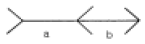
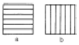
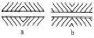
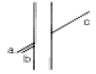
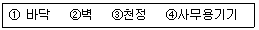
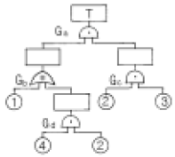
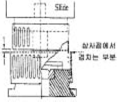

산업안전산업기사 (2005-05-29 기출문제)
1과목: 산업안전관리론
1. 버드(Bird)의 재해발생에 관한 연쇄이론 중 징후는 몇 단계에 해당하는가?
- 제1단계
- 제2단계
- 제3단계
- 제4단계
(정답률: 50%)

2. 그림의 착시(錯視)현상 중 Herling 착시현상에 해당되는 것은?
- a가 b보다 길게 보인다.

- a는 세로로 길어 보이고, b는 가로로 길어 보인다.

- a는 양단이 벌어져 보이고 b는 중앙이 벌어져 보인다.

- a와 c가 일직선으로 보인다.

(정답률: 52%)
3. 기계적 에너지에 의한 재해는 크게 정적형태과 동적형태로 구분되는데 정적형태의 재해에 속하지 않는 것은?
- 낙하
- 충돌
- 붕괴
- 추락
(정답률: 42%)
4. 안전관리 조직의 기본 유형이 아닌 것은?
- line system
- staff system
- line-staff system
- safety system
(정답률: 84%)
5. 근로자가 안전작업 표준을 이행하지 않는다면 다음중 무엇의 결함이 있겠는가?
- 안전교육의 결함
- 안전태도의 결함
- 작업분석의 불완전
- 안전작업 표준 미작성
(정답률: 74%)
6. 피로의 예방과 회복대책을 설명한 것이다. 틀린 것은?
- 작업속도를 적절하게 할 것
- 직장체조를 통한 혈액순환 촉진 할 것
- 작업부하를 크게 할 것
- 근로시간과 휴식을 적정하게 할 것
(정답률: 90%)
7. 작업시 착용해야할 보호구가 잘못 연결된 것은?
- 폐수 맨홀청소 - 분진마스크
- 아세틸렌용접 - 용접용 보안면
- 용광로 - 고열복
- 3m 위 작업 - 안전밸트
(정답률: 74%)
8. 일상점검내용 중 이상소음, 냄새, 진동, 기름누출 등의 위험요소 중심으로 주안점을 두고 점검하는 시기는?
- 작업전
- 작업중
- 작업종료시
- 사고발생직후
(정답률: 60%)
9. 우리나라 산업안전 표지의 명칭으로서 잘못 표기된 것은?
- 금지표지
- 경고표지
- 안내표지
- 위험표지
(정답률: 62%)
10. 도수율이 0.02, 강도율이 1.5인 사업장의 종합 재해지수는 얼마인가?
- 5.031
- 2.151
- 0.356
- 0.173
(정답률: 41%)
11. 공장내에 안전표지를 부착하는 주된 이유는?
- 능률적인 작업을 유도하기 위하여
- 인간 심리의 활성화 촉진
- 인간 행동의 변화 통제
- 공장내의 환경 정비 목적
(정답률: 52%)
12. 안전교육 계획에 포함하여야 할 사항이 아닌 것은?
- 교육의 종류 및 대상
- 교육의 과목 및 내용
- 교육장소 및 방법
- 교육지도안
(정답률: 64%)
13. 다음 중 라인(line)식 안전 조직의 특징이 아닌 것은?
- 모든 명령은 생산 계통을 따라 이루어진다.
- 생산조직 전체에 안전관리 기능을 부여한다.
- 경영자의 조언과 자문역할을 한다.
- 소규모가 사업장에 적합하다.
(정답률: 54%)
14. 무재해 운동의 추진을 위한 3요소에 속하지 않는 것은?
- 작업조건의 기술적 개선
- 톱(top)의 엄격한 안전경영자세
- 안전활동의 라인(Line)화
- 직장 자주안전활동의 활성화
(정답률: 55%)
15. 안전관리의 4M 가운데 Media란 무엇을 의미하는 것인가?
- 인간과 기계를 연결하는 매개체
- 인간과 관리를 연결하는 매개체
- 기계와 관리를 연결하는 매개체
- 인간과 작업환경을 연결하는 매개체
(정답률: 73%)
16. 하바드 학파(Havard School)의 학습지도법의 5단계중 3단계에 해당하는 것은?
- 교시한다.
- 연합시킨다.
- 총괄한다.
- 응용시킨다.
(정답률: 56%)
17. 안전교육의 방법 중 프로그램 학습법의 장점이라 할 수 있는 것은?
- 기본 개념학이나 논리적 학습에 유리하다.
- 여러가지 수업 매체를 동시에 활용할 수 있다.
- 사실, 사상을 시간, 장소의 제한없이 제시할 수 있다.
- 학습자의 태도, 정서등의 감화를 위한 학습에 효과적이다.
(정답률: 23%)
18. 다음은 기억과 망각에 관한 내용이다. 틀린 것은?
- 기억된 내용의 망각은 시간의 경과에 비례하여 서서히 이루어진다.
- 의미없는 내용은 의미있는 내용보다 빨리 망각한다.
- 사고력을 요하는 내용이 단순한 지식보다 기억 파지의 효과가 높다.
- 학습 직후에 복습하면 기억파지의 효과가 높아진다.
(정답률: 49%)
19. 다음 중 스트레스의 해소법으로 좋지 못한 방법은?
- 주위 사람과의 대화
- 자기 감정을 무시할 것
- 자기 자신에 대한 반성
- 양보와 협조
(정답률: 88%)
20. 안전교육방법 중 실연법의 설명으로 맞는 것은?
- 시설유지비가 적게든다.
- 학생들의 참여가 제약된다.
- 학생들의 사회성이 결여되기 쉽다.
- 다른 방법보다 교사 대 학습자수의 비율이 높다.
(정답률: 59%)
2과목: 인간공학 및 시스템안전공학
21. 다음 중 사무실 설계시 추천반사율이 낮은 것부터 순서대로 나열한 것은?

- ①-②-③-④
- ③-④-①-②
- ①-④-②-③
- ①-④-③-②
(정답률: 74%)
22. 결함수 그림에 해당하는 minimal cut set을 구하면?

- [2,3]
- [1,2,3]
- [1,2,3][2,3,4]
- [1,2,3][1,3,4]
(정답률: 50%)
23. 보전성 설계의 고려사항이 아닌 것은?
- 고장이나 결함이 발생한 부분에 접근성이 좋을 것
- 고장이나 결함의 징조를 쉽게 검출할 수 있을 것
- 경험이 풍부하고 수리에 숙련되어 능력이 충분할 것
- 고장, 결합부품 및 재료의 교환이 신속하고 쉬울 것
(정답률: 62%)
24. 인간이 앉아서 작업대위에 손을 움직여 나타나는 평면작업 중 팔을 굽히고도 편하게 작업을 하면서 좌우의 손을 움직여 생기는 작은 원호형의 영역을 무엇이라 하는가?
- 최대작업역
- 평면작업역
- 작업공간포락면
- 정상작업역
(정답률: 41%)
25. 선형조정장치를 16cm 옮겼을 때 선형표시 장치가 5cm 움직였다면 통제 표시비(C/D비)는?
- 0.2
- 2.5
- 3.2
- 5.3
(정답률: 76%)
26. 인간과 기계계에서 병열로 연결된 작업의 신뢰도는 얼마인가?(단, 인간은 0.8, 기계는 0.98의 신뢰도를 갖고 있다. )
- 0.996
- 0.986
- 0.976
- 0.966
(정답률: 59%)
27. 인간공학적으로 조작구를 설계할 때 고려하여야 할 사항이 아닌 것은?
- 중량감
- 탄력성
- 마찰력
- 관성력
(정답률: 32%)
28. 광원으로부터의 직사휘광을 처리하는 방법이 아닌 것은?
- 광원의 휘도를 줄이며 수를 줄인다.
- 광원을 시선에서 멀리 둔다.
- 휘광원 주위를 밝게 하여 휘도비를 줄인다.
- 가리개, 갓 등을 사용한다.
(정답률: 45%)
29. 인간 에러(human error)를 일으킬수 있는 정신적 요소가 아닌 것은?
- 방심과 공상
- 개성적 결함요소
- 판단력의 부족
- 기능정도
(정답률: 59%)
30. 조명관리는 안전과 생산에 지대한 영향을 준다. 사무실이나 일반적 산업상황에서 광속 발산비(Luminance Ratio)의 추천 발산비는 얼마인가?
- 2:1
- 3:1
- 4:1
- 5:1
(정답률: 39%)
31. 시각적 표시장치에서 지침설계의 요령이 아닌 것은?
- 뽀족한 지침을 사용한다.
- 지침의 끝은 눈금과 겹치도록 한다.
- 지침을 눈금면에 밀착시킨다.
- 원형 눈금일 경우 지침의 색은 선단에서 눈금의 중심까지 칠한다.
(정답률: 46%)
32. 체계(system)의 특성이 아닌 것은?
- 집합성
- 관련성
- 목적추구성
- 환경독립성
(정답률: 77%)
33. 가치척도의 신뢰성이란?
- 보편성을 뜻한다.
- 정확성을 뜻한다.
- 객관성을 뜻한다.
- 반복성을 뜻한다.
(정답률: 37%)
34. 경계 및 경보신호를 설계할 때 적합하지 않는 것은?
- 장애물이 있을시는 500Hz이하의 진동수를 갖는 신호를 사용
- 주의를 끌기 위해서는 변조된 신호를 사용
- 배경소음의 진동수와 같은 신호를 사용
- 경보효과를 높이기 위해서 개시시간이 짧은 고감도 신호를 사용
(정답률: 62%)
35. 인간과 기계의 기능 비교에 대한 설명 중 맞지 않는 것은?
- 인간은 임기응변능력이 기계보다 앞선다.
- 기계는 쉽게 피로하지 않는다는 점에서 인간보다 앞선다.
- 반복작업인 경우는 인간의 신뢰도는 기계보다 앞선다.
- 인간은 귀납적으로 정보를 처리한다.
(정답률: 75%)
36. 인간-기계통합 체계에서 인간 또는 기계에 의해서 수행되는 4가지 기본 기능 중 다른 세가지 기능 모두와 상호작용 하는 것은?
- 감지
- 정보 보관
- 행동 기능
- 정보처리 및 의사결정
(정답률: 36%)
37. 통제 표시비의 설계시 고려사항이 아닌 것은?
- 계기의 크기
- 조작거리
- 조작시간
- 방향성
(정답률: 23%)
38. 인간의 정보처리 능력의 한계는 시간적으로 표시하는 경우 어느 정도인가?(단, 계속 발생하는 신호의 뒷부분을 검출 할 수 없는 경우가 가끔 발생 할때의 시간)
- 0.1초 이내
- 0.2초 이내
- 0.3초 이내
- 0.5초 이내
(정답률: 32%)
39. “에너지 대사율, 체내수분의 손실량, 흡기량의 억제도”는 인간의 신뢰성과 관련하는 여러 특성 중 무엇을 측정하기 위함인가?
- 주의력
- 긴장수준
- 의식수준
- 관찰력
(정답률: 46%)
40. 인간공학 전문분야를 특성화하여 다른 응용분야와 구별한 일반적 견해와 거리가 가장 먼 것은?
- 인간에게 쓸모가 있는 사물, 기계 등을 만들되, 항상 설계자가 우선이다.
- 인간의 능력 및 한계와 설계 내용에 대한 평가에는 개인차가 있음을 인식한다.
- 사물, 절차 등의 설계가 인간의 행동과 복지에 영향을 미친다고 믿는다.
- 과학적 방법과 객관적 자료에 바탕을 두고 가설을 시험하여 인간행동에 관한 기초 자료를 얻는다.
(정답률: 57%)
3과목: 기계위험방지기술
41. 연삭기에서 숫돌의 회전속도가 너무 빠르면 위험하다. 숫돌의 원주속도를 표시한 것은?
- 원주속도 = π×반지름×매분회전수
- 원주속도 =1/2×π×반지름×매분회전수
- 원주속도 = π×지름×매분회전수
- 원주속도 =1/2×π×매분회전수
(정답률: 54%)
42. 수직 선반, 터릿트 선반 등으로 부터의 돌출 가공물에 설치할 방호 장치는?
- 클럿치
- 덮개 또는 울
- 슬리이브
- 베드
(정답률: 74%)
43. 로울러기의 급정지장치로서 무릎 조작식은 다음 어느 위치에 있어야 하는가?
- 밑면에서 1.8m 이상
- 밑면에서 0.7m ∼1.1m 이내
- 밑면에서 0.4∼0.6m 이내
- 밑면에서 0.4m 이내
(정답률: 74%)
44. 지게차로 20km/hr의 속력으로 주행할 때 좌우안정도는 얼마이어야 하는가?
- 37%
- 39%
- 40%
- 42%
(정답률: 55%)
45. 다음 중 밀링작업에 있어서의 안전대책이 아닌 것은?
- 장갑의 착용을 금한다.
- 급송이송은 백래시 제거장치를 작동한 후 실시한다.
- 상하, 좌우 이송 손잡이는 사용 후 반드시 빼둔다.
- 밀링커터는 걸레등으로 감싸쥐고 다루도록 한다.
(정답률: 43%)
46. 용접 팁의 청소는 다음 중 무엇으로 해야 좋은가?
- 동선이나 놋쇠선
- 동선이나 철선
- 전선케이블
- 줄이나 팁클리이너
(정답률: 77%)
47. 프레스 등을 사용하여 작업할 때 작업시작전의 점검사항으로 틀린 것은?
- 클러치 및 브레이크의 기능
- 1행정 1정지기구·급정지장치 및 비상정지장치의 기능
- 프레스의 금형 및 고정볼트
- 이상음, 진동상태
(정답률: 59%)
48. 기계를 구성하는 요소에서 피로현상은 안전과 밀접한 관련이 있다. 다음중 피로 파괴현상과 가장 관련이 적은 것은?
- vibration
- notch
- size effect
- corrosion
(정답률: 25%)
49. 컨베이어의 종류가 아닌 것은?
- 벨트컨베이어
- 체인컨베이어
- 로울러컨베이어
- 풀리컨베이어
(정답률: 48%)
50. 연삭숫돌의 원주면과 받침대(작업대)와의 간격은?
- 10mm 이내
- 6mm 이내
- 5mm 이내
- 3mm 이내
(정답률: 47%)
51. 프레스기 작동후 작업점까지 도달시간이 0.5초 걸렸다면 양수조작식 안전장치의 조작부의 설치거리는?
- 60㎝
- 70㎝
- 80㎝
- 90㎝
(정답률: 47%)
52. 기계설비 구조의 안전화 가운데 설계상 안전율의 결정은 매우 중요한 고려사항이다. 안전율(safety factor) 산출공식이 아닌 것은?
- 기초강도/허용응력
- 극한강도/최대설계응력
- 파괴하중/최대사용하중
- 안전하중/파단하중
(정답률: 49%)
53. 운전중 이동시 안전을 위하여 건널다리를 설치하는 운반기계는?
- 포크리프트
- 데릭
- 호이스트
- 컨베이어
(정답률: 66%)
54. 다음은 연삭기의 구조면에서의 방호대책이다. 옳은 것은?
- 숫돌의 결합시 축과 0.5mm 정도의 틈새를 둔다.
- 칩비산방지 투명판(shield)은 방호장치이다.
- 연삭숫돌을 연삭기에 고정시킬 때 라벨을 제거하고 견고히 부착한다.
- 탁상용연삭기는 작업받침대(work rest)와 조정편을 설치하고 연삭숫돌과 조정편의 간격은 1∼3mm로 한다.
(정답률: 25%)
55. 산소 아세틸렌 용접시 역류, 역화의 원인에 해당되지 않는 것은?
- 팁에 불순물이 부착되었을 때
- 토치의 팁이 과열되었을 때
- 토치의 성능이 불량할 때
- 산소 공급이 부족할 때
(정답률: 70%)
56. 선반의 바이트에 설치된 안전장치는?
- 브레이크
- 칩받이
- 커버
- 칩브레이커
(정답률: 51%)
57. 동력식 수동대패기계의 덮개 하단과 테이블 간격은 얼마 이내가 적당한가?
- 3mm
- 5mm
- 8mm
- 12mm
(정답률: 41%)
58. 공작기계에서 일감을 고정할 때 적당하지 않는 방법은?
- 볼트-너트로 고정한다.
- 손으로 잡는다.
- 지그로 고정한다.
- 바이스로 고정한다.
(정답률: 68%)
59. 극한강도가 40kg/㎜2인 연강봉에 300kg의 인장하중을 안전하게 작용시키기 위한 봉의 지름은 약 얼마인가? (단, 안전율은 4 이다. )
- 0.53㎝
- 0.62㎝
- 0.75㎝
- 0.84㎝
(정답률: 23%)
60. 프레스 금형에 고정 가드(GUARD)를 설치하고자 할 때 상사점 위치에서 가드의 상차겹침이 적합한 설치 조정 거리인 것은?

- 최소 8mm
- 최소 9mm
- 최소 11mm
- 최소 12mm
(정답률: 30%)
4과목: 전기 및 화학설비위험방지기술
61. 정전기 제거의 방법으로서 틀린 것은?
- 설비에 정전방지 도장을 한다.
- 설비 주변의 공기를 가습한다.
- 설비의 금속 부분을 접지한다.
- 설비의 주변에 자외선을 쏘인다.
(정답률: 73%)
62. 심실세동을 일으키는 위험한 전기에너지는 인체의 전기저항을 500[Ω]으로 보았을 때 몇 주울인가?
- 9.6(J)
- 11.6(J)
- 13.6(J)
- 15.6(J)
(정답률: 39%)
63. 공기 50%, 수소 20%, 아세틸렌 30%로 혼합되어 있는 혼합 가스가 있다. 이 혼합가스의 폭발하한계는 얼마인가? (단, 수소와 아세틸렌의 폭발하한값은 4%, 2.5% 이다. )
- 2.50%
- 2.94%
- 4.76%
- 5.88%
(정답률: 58%)
64. 다음 중 산업안전보건법상 발화성 물질로 분류되지 않는 것은?
- 리튬
- 아세틸렌
- 셀룰로이드류
- 칼슘탄화물
(정답률: 35%)
65. 전기설비의 경로별 재해중 가장 높은 것은?
- 접촉부의 과열
- 과전류
- 누전
- 단락
(정답률: 25%)
66. 20[℃], 1[atm]의 공기를 압축비=3으로 단열 압축하였을때 의 온도[℃]는? (단, 공기의 비열비는 1.4이다. )
- 약 84
- 약 151
- 약 182
- 약 1091
(정답률: 33%)
67. 정전기 발생(대전)현상으로 옳지 않는 것은?
- 박리현상
- 마찰현상
- 분출현상
- 응고현상
(정답률: 73%)
68. 부식성이 강한 가스나 독성이 강한 가스에 사용되는 안전밸브는?
- 개방형 안전밸브
- 밀폐형 안전밸브
- 스프링(spring)식 안전밸브
- 벨로우즈(bellows)형 안전밸브
(정답률: 43%)
69. 옥내배선의 접지측과 비접지측을 간단히 파악 할 수 있는 기기는?
- 전압계
- 네온검전기
- Megger
- Earth tester
(정답률: 27%)
70. 화재시 발생되는 일산화탄소가 인체에 치명적인 상태로 만들 수 있는 초기 농도는 얼마인가?
- 4 - 6%
- 6 - 8%
- 3 - 4%
- 10 - 13%
(정답률: 23%)
71. 활선작업에 대한 설명 중 틀린 것은?
- 전기를 휴전시킨채로 전기작업을 하는 것이다.
- 근접된 충전부분에 방호구를 설치해야 한다.
- 작업자는 절연용 보호구를 착용해야 한다.
- 감시인을 정하여 감시하게 한다.
(정답률: 58%)
72. 전기설비의 안전도 증강에 의거 제작된 전기기기의 방폭구조는?
- 안전증 방폭구조 전기기기
- 내압 방폭구조 전기기기
- 본질안전 방폭구조 전기기기
- 압력 방폭구조 전기기기
(정답률: 57%)
73. 폭발화재 발생시 장치내부의 이상압력을 안전하게 방출 경감시키는 장치와 거리가 먼 것은?
- 안전밸브
- 파열판
- 폭압방산구
- 격리밸브
(정답률: 38%)
74. 다음 전기화재의 원인으로 거리가 먼 것은?
- 누전
- 단락
- 과전류
- 접지
(정답률: 68%)
75. 누전차단기의 사용기준에 해당하지 않는 것은?
- 해당 부하에 적합한 정격전류를 갖출 것
- 해당 부하에 적합한 차단용량을 갖출 것
- 해당 전로의 공칭전압의 90∼ 110%이내의 정격전압일 것
- 정격감도전류 30㎃이하, 동작시간이 0.3초 이내 일 것
(정답률: 45%)
76. 아세틸렌의 폭발 상한계는 100%이다. 이것은 아세틸렌 가스 중에 산소가 전혀 없어도 폭발할 수 있다는 것을 나타낸다. 다음 중 이러한 성질을 가지고 있는 가스는?
- 수소
- 프로판
- 일산화탄소
- 산화에틸렌
(정답률: 48%)
77. 다음의 할로겐화물 소화약제 중 비점이 가장 낮은 것은?
- Halon 2402
- Halon 1301
- Halon 1211
- Halon 1011
(정답률: 27%)
78. 다음은 최소 발화에너지에 대한 설명이다. 틀린 것은?
- 최소발화에너지는 압력이 증가할수록 낮아진다.
- 최소발화에너지는 온도가 높아질수록 낮아진다.
- 최소발화에너지는 공기중에서 보다 산소중에서 더 낮다.
- 최소발화에너지는 혼합기체의 흐름이 있으면 유속 증가에 따라 감소한다.
(정답률: 36%)
79. 화학공정의 되먹임(피드백)제어에서 제어알고리즘을 이용하여 제어할 값을 결정하는 곳은?
- 검출부
- 조절부
- 조작부
- 전송부
(정답률: 33%)
80. 자연발화가 일어나는 계에 대하여 에너지 수지식을 세우면 "열의 축적 = 열의 발생 - 열의 방열"이 된다. 다음 각 항의 설명 중 올바르지 못한 것은?
- 산화열, 흡착열, 발효열등은 열을 발생시키므로 열의 축적을 일으켜 계의 온도를 상승시킨다.
- 주위온도를 낮추는 것은 열의 방열을 크게 하여 열의 축적을 방지하는 효과가 있다.
- 통풍을 잘 시키면 산소가 원활하게 공급되어 열이 발생하여 계의 온도가 올라간다.
- 열전도율이 높은 물질을 사용하면 열의 방열이 많아져 열의 축적을 방지하는 효과가 있다.
(정답률: 47%)
5과목: 건설안전기술
81. 화물자동차에 짐을 싣는 작업 또는 내리는 작업을 하는때에 추락에 의한 근로자의 위험을 방지하기 위하여 안전하게 상승 또는 하강하기 위한 설비를 설치하여야 하는 기준으로 옳은 것은?
- 바닥으로부터 짐 윗면까지의 높이가 2m이상일 때
- 바닥으로부터 짐 아래면까지의 높이가 2m이상일 때
- 바닥으로부터 짐 윗면까지의 높이가 1m이상일 때
- 바닥으로부터 짐 아래면까지의 높이가 1m이상일 때
(정답률: 34%)
82. 부두, 안벽 등 하역작업을 하는 장소에 대하여 부두 또는 안벽의 선을 따라 통로를 설치할 때 통로의 최소 폭은?
- 70cm
- 80cm
- 90cm
- 100cm
(정답률: 60%)
83. 지하수의 유량계산을 위한 Darcy의 법칙에서 투수계수에 대한 설명으로 틀린 것은?
- 모래는 진흙보다 투수계수가 크다.
- 투수계수는 모래에서 평균입자지름(유효 입경)의 제곱에 비례한다.
- 투수계수는 현장시험을 통하여 구할 수 있다.
- 투수계수는 간극의 크기가 작을수록 증가한다.
(정답률: 44%)
84. 철골작업시 추락재해를 방지하기 위한 설비가 아닌 것은?
- 안전대 및 구명줄
- 어스 앙카
- 승강용 트랩
- 추락방지용 방망
(정답률: 62%)
85. 굴착기계로 채석작업시 근로자의 작업장에 후진하여 접근하거나 전락할 우려가 있을 때 사고를 방지하기 위하여 배치하여야 하는 사람은?
- 작업지휘자
- 안전담당자
- 감시인
- 유도자
(정답률: 53%)
86. 다음 중 스크레이퍼의 용도로 가장 거리가 먼 것은?
- 싣기
- 운반
- 하역
- 다짐
(정답률: 62%)
87. 흙의 안식각은 어느 각을 말하는가?
- 자연 경사각
- 비탈면각
- 시공 경사각
- 계획 경사각
(정답률: 52%)
88. 거푸집동바리의 수평변위를 방지하기 위한 수평연결재에 대한 기준으로 틀린 것은?
- 강관을 사용하는 경우 높이 2m이내마다 수평연결재를 2개 방향으로 설치한다.
- 파이프서포트를 사용하는 경우 높이가 3. 5m를 초과할 때 높이 2m이내마다 수평연결재를 2개 방향으로 설치한다.
- 조립강주를 사용하는 경우 높이가 4m를 초과할 때 높이 4m이내마다 수평연결재를 2개 방향으로 설치한다.
- 목재를 사용하는 경우 높이 4m이내마다 수평연결재를 2개 방향으로 설치한다.
(정답률: 26%)
89. 현장에서 강관을 사용하여 비계를 구성하는 때에 비계기둥간의 얼마를 초과해서는 안되는가?
- 200kg
- 300kg
- 400kg
- 500kg
(정답률: 59%)
90. 건설공사중 추락 재해예방을 위한 추락방지용 방망의 그물코 크기로 알맞는 것은?
- 가로, 세로가 10cm 이하
- 가로, 세로가 15cm 이하
- 가로, 세로가 20cm 이하
- 가로, 세로가 25cm 이하
(정답률: 50%)
91. 건설업 산업안전보건관리비 계상 및 사용기준을 제정하여 사용하게 된 직접적인 동기로 가장 알맞은 것은?
- 공사의 품질을 좋게 하기 위함이다.
- 공사의 원가를 절감하기 위함이다.
- 공사시에 근로자의 생명과 안전을 지키기 위함이다.
- 공사중 공사기간을 단축하기 위함이다.
(정답률: 68%)
92. 다음은 작업으로 인하여 물체가 낙하 또는 비래할 위험이 있는 경우 위험방지를 위해 취해야할 조치사항으로 가장 거리가 먼 것은?
- 낙하물 방지망 또는 방호선반의 설치
- 출입금지구역의 설정
- 보호구의 착용
- 감시인 배치
(정답률: 59%)
93. 높이 2m이상인 작업발판의 끝이나 개구부 등에서 추락을 방지하기 위한 설비로 가장 적합하지 않은 것은?
- 안전난간
- 덮개
- 방호선반
- 울타리
(정답률: 39%)
94. 낙하물 방지를 위하여 비계의 외부에 설치하는 방호선반의 내민길이(①)와 수평면에 대한 각도(②)는 각각 얼마를 기준으로 하는가?
- ①:벽면으로부터 2m이상, ②:20도 내지 30도 유지
- ①:벽면으로부터 2m이상, ②:30도 내지 40도 유지
- ①:벽면으로부터 3m이상, ②:20도 내지 30도 유지
- ①:벽면으로부터 3m이상, ②:30도 내지 40도 유지
(정답률: 57%)
95. 재해사고를 예방하기 위해 크레인에 설치된 안전장치가 아닌 것은?
- 과부하 방지장치
- 브레이크장치
- 권과방지장치
- 버켓장치
(정답률: 61%)
96. 콘크리트 타설시 거푸집의 측압에 영향을 미치는 인자에 대한 설명으로 틀린 것은?
- 부재의 단면이 클수록 크다.
- 슬럼프가 작을수록 크다.
- 거푸집 속의 콘크리트 온도가 낮을 수록 크다.
- 붓는 속도가 빠를 수록 크다.
(정답률: 52%)
97. 다음중 거푸집 동바리를 고정하거나 조립 또는 해체작업을 할 때 안전담당자의 유해·위험방지업무와 가장 거리가 먼 것은?
- 안전한 작업방법을 결정하고 작업을 지휘하는 일
- 재료, 기구의 결함유무를 점검하고 불량품을 제거하는 일
- 작업중 안전대 및 안전모 등 보호구 착용상황을 감시하는 일
- 거푸집 동바리의 강도를 측정하는 일
(정답률: 58%)
98. 근로자의 작업배치시 추락위험이 있을 때 비계 조립 등에 의하여 작업발판을 설치해야 하는 높이 기준은?
- 1m 이상
- 2m 이상
- 3m 이상
- 4m 이상
(정답률: 58%)
99. 달비계에 사용하는 달기와이어로프의 기준에 대한 설명으로 틀린 것은?
- 와이어로프의 한 꼬임에서 소선의 수가 8%이상 절단된 것은 사용할 수 없다.
- 지름의 감소가 공칭지름의 7%를 초과하는 것은 사용할 수 없다.
- 심하게 변형, 부식된 것은 사용할 수 없다.
- 안전 계수는 10이상인 것을 사용하여야 한다.
(정답률: 61%)
100. 비계의 수평재의 최대 휨모멘트가 5,000kgf·cm, 수평재의 단면 계수가 5cm3 일 때 휨응력(σ)은 얼마인가?
- 500kgf/cm2
- 1,000kgf/cm2
- 2,000kgf/cm2
- 2,500kgf/cm2
(정답률: 63%)
1. 제1단계: 버드의 서비스 제공
2. 제2단계: 과다한 수요와 공급 부족
3. 제3단계: 대규모 이용과 불법적인 활동 증가
4. 제4단계: 도시 환경 파괴와 생태계 변화
따라서, 버드의 재해발생에 관한 연쇄이론에서 징후는 제3단계에 해당한다. 이는 대규모 이용과 불법적인 활동이 증가하기 때문이다.